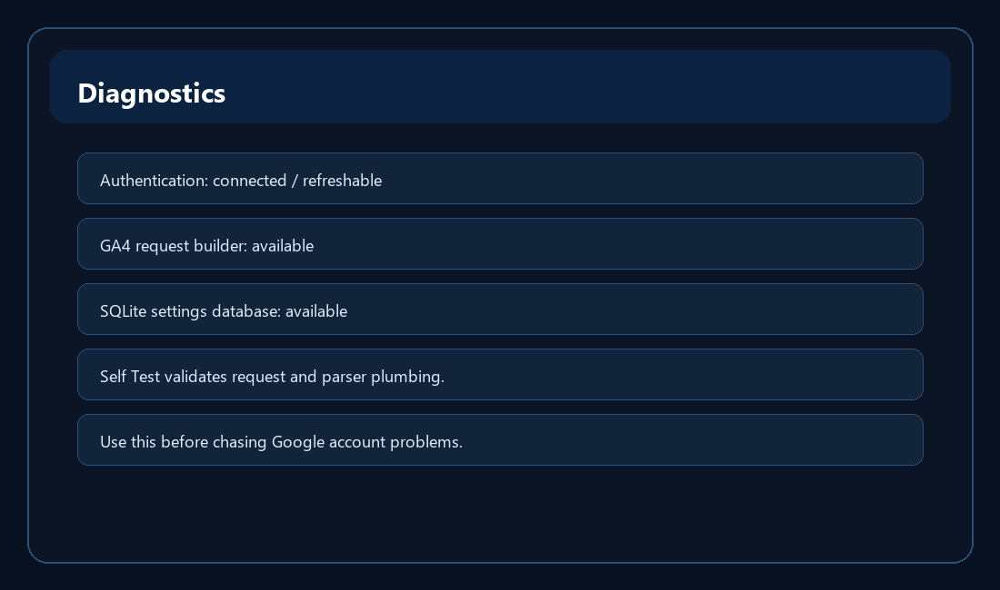

Diagnostics

What Diagnostics checks
- Diagnostics shows authentication state, GA4 status, and storage status.
- Run Self Test builds sample GA4 report requests and parses a sample trend response. It does not make a live Google request.
When to use it
Use Diagnostics when setup or data retrieval is confusing and you want to confirm the app can prepare report requests and parse responses.